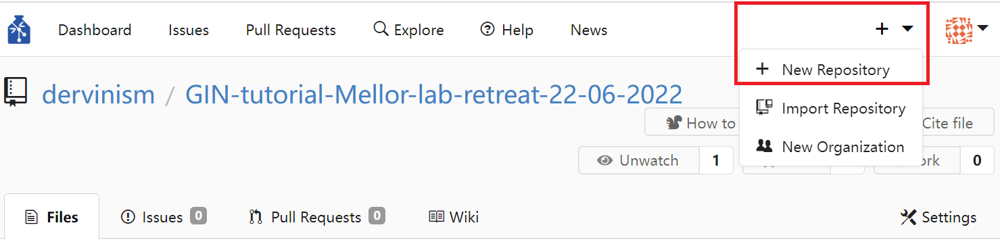
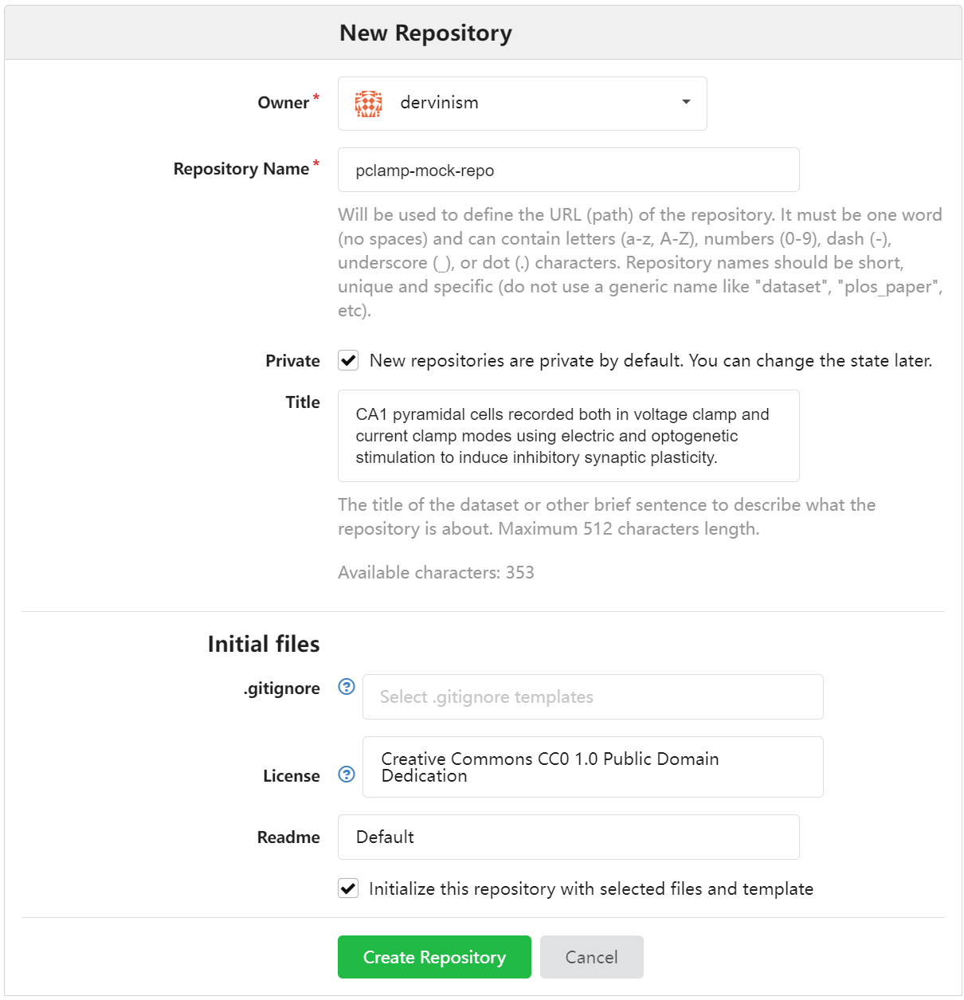
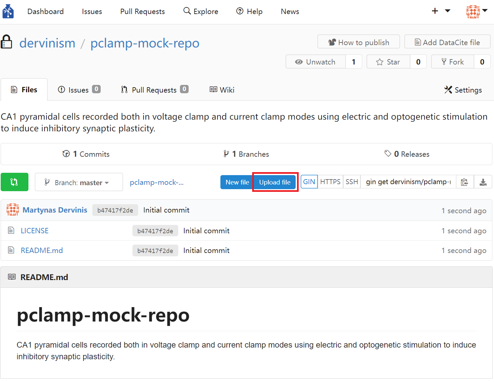

Bristol GIN for Patch Clamp Data
Contents
Bristol GIN for Patch Clamp Data#
Create GIN Account#
In order to be able to follow this tutorial, you need to have a GIN account either on Bristol GIN or on the public GIN service. GIN web interface documentation has it all explained here.
After creating the account, login to it by typing:
gin login
Download Mock Data#
We are going to download intracellular electrophysiology recording data available in dervinism/icephys_mock_repo repository. To get the data, type in the lines below to your terminal:
gin get dervinism/icephys_mock_repo
cd icephys_mock_repo
gin get-content
This is part of the real intracellular electrophysiology recording data. The data has been recorded in pyramidal cells in the CA1 region of the hippocampus in vitro. AMPA and NMDA receptors were blocked using NBQX and AP5, respectively. During the recording a stimulating electrode was also placed in the pyramidal layer of the hippocampus roughly 100 um away from the recording site. In addition to the electrical stimulation, optogenetic stimulation was used to excite parvalbumin (PV) expressing interneurons in the pyramidal layer using channelrhodopsin. Both electrical stimulation and optogenetic stimulation were applied interchangeably every 5 seconds using two 5-millisecond light pulses or two action potentials separated by 50 milliseconds while the cell was voltage-clamped (the baseline stimulation regime). Then the cell was switched to the current clamp and the neural plasticity inducing protocal was applied. The plasticity protocol consisted of a burst of 4 action potentials paired with a 5-millisecond light pulse applied at the onset of the first action potential. The plasticity inducing stimulation was applied 100 times every 200 milliseconds. Then the cell was switched back to the voltage clamp and the baseline stimulation regime was resumed. The experiment is described in more detail in the README file.
The data inside the repository is organised based on recording sessions and has the following structure: recording-session-date/brain-slice-number/cell-number. Each recording session has a lab book file containing comments relevant for that particular recording session. Each cell recording has:
An image of the recorded slice.
A CSF file containing raw trace data exported from the aquisition CED Signal software.
A MAT file containing exported version of the CSF file readable in Matlab. Only the traces relevant for the experiment are stored in this file.
Set up Your Research Data Repository#
You should rename your repository, delete the .git folder located inside the repository root folder, and update your README file if needed. Once this is done, issue the command below:
gin init
This would intialise the local repository.
Upload Repository#
The next step is to create a remote repository with the same name and associate it with the local repository. You can simply do it by typing in your terminal:
gin add-remote your-repo-name gin:your-username/your-repo-name --default
In this case, the remote repository is going to be created since it does not exist. You can now type:
gin commit . -m "Initial commit"
gin upload .
The first command would record local changes with the local version control system. By doing so you create the image of your repository that can always be reverted to in the future in case the need to do so arises. When commiting local repository changes to your version control system you typically provide a concise message describing the changes. By convention, the message length should not exceed 50 characters. Dot means that the command is executed on the contents of the current working directory; therefore, make sure that you are inside the root folder of your repository when carrying out this action. The flag -m is used to pass the commit message. When you make new changes to the repository, whether editing text files or manipulating your data files, you should commit these changes periodically to your local versioning system. Finally, the upload command updates the remote instance of the repository with the changes that were commited locally up to this point.
Alternatively, you can create a repository using the GIN web interface. You do it by clicking the plus sign in the top menu and then clicking and chosing the New Repository option.
{kind=link}
Figure 1. Create Repository Using Web Interface
You should see the New Repository window where you enter the name of the repository and its description as shown below.
{kind=link}
Figure 2. Enter Repository Details Using Web Interface
Finally, you can upload files by clicking the blue Upload file button on the repository page.
{kind=link}
Figure 3. Upload Repository Files Using Web Interface
The limitation of using the web interface is that every time you update your remote repository (upload files), you will be limited to uploading 100 files at a time with each file being no larger than 10 gigabytes. Therefore, it is more effecient/effective to use the command line tools which have none of these limitations.
When you use the web interface, you can specify the commit message title (no more than 50 characters by convention) and the commit message body (no more than 72 characters by convention).
Remove Content of Your Local Research Data Repository#
One advantage of using GIN for your data repository mangement is that you do not need to keep duplicate repositories in order to prevent accidental detrimental changes to your main repository. One reason for that is having version control system. The other reason is that you can safely remove the content of your local repository and replace it with pointers to original files. As a result you can save space on your local hard-drive. To remove the local content, type the following line in your terminal:
gin remove-content
Local files larger than 10 megabytes should be replaced by symbolic links. In case you want to remove the content of specific files only, you can type:
gin remove-content <absolute or relative path to file or folder>
For example, to remove particular raw research data from our calcium imaging data repository, we type:
gin remove-content '180126/Slice1/Cell1/180126 s1c1.jpg'
gin remove-content 180126/Slice1/Cell1/180126__s1c1_001.cfs
To simply restore the file content type in
gin get-content
If you no longer need to work on your repository and its remote copy is up to date with the local copy, you can simply delete the local repository copy altogether. You should always be able to restore your repository and all of its contents on your local machine by executing these commands in your terminal (replace the repository path as appropriate):
gin get dervinism/icepys_mock_repo
cd icepys_mock_repo
gin get-content
Convert Your Data to Standardised Format#
In order to increase your research data’s adherence to the FAIR principles of scientific data management and, in particular, to increase the interoperability of your data and chances of it being reused beyond its original purpose of collection, it is highly advisable to convert your data into one of the more popular standard file formats for neuroscience data. One such format is the Neurodata Without Borders (NWB) which is highly suitable for most of the neurophysiology data. Programming interfaces in both Matlab and Python are available for converting your data. Here we are going to provide explanations of how you can convert your data in both programming languages. While showing you examples of that, we will continue our focus on the intracellular electrophysiology data.
Convert to NWB Using Matlab#
Install MatNWB Toolbox#
To begin with the Matlab demonstration, you would need to install MatNWB toolbox. To download the toolbox, type in your terminal:
git clone https://github.com/NeurodataWithoutBorders/matnwb.git
Move the downloaded repository to the folder where you keep your code libraries. Then type the following in the Matlab command line:
cd matnwb
addpath(genpath(pwd));
generateCore();
You can now start using MatNWB. MatNWB interface documentation can be accessed here.
Record Metadata#
Inside the intracellular electrophysiology repository there is a folder with the Matlab file that you can execute in order to convert the data of one particular imaging/recording session into the NWB format. The script is located inside the 180126/Slice1/Cell1/180126/nwb folder in the file named convert2nwbpClamp.m and, if executed, it would convert the data stored in the file 180126/Slice1/Cell1/180126__s1c1_001_ED.mat.
Initially, we start by recording the metadata associated with this experimental session. In this tutorial the metadata is divided into three types: Project, animal, and session metadata. The project metadata is common to all animals and experimental sessions and is defined by the part of the script below:
projectName = 'Inhibitory plasticity experiment in CA1';
experimenter = 'MU';
institution = 'University of Bristol';
publications = 'In preparation';
lab = 'Jack Mellor lab';
brainArea = 'Hippocampus CA1';
The names of most of these parameters are self-explanatory. Next we define animal metadata. The reason to have this type of data separate is that multiple slices can be obtained from the same animal and used in separate recording sessions. The animal metadata is defined in the code snippet below:
animalID = '180126';
ageInDays = 34;
age = ['P' num2str(ageInDays) 'D']; % Convert to ISO8601 format: https://en.wikipedia.org/wiki/ISO_8601#Durations
strain = 'Ai32/PVcre';
sex = 'F';
species = 'Mus musculus';
weight = [];
description = '001'; % Animal testing order.
Names of these parameters are again self-explanatory. Finally, we define the subject level metadata in the code below:
startYear = 2018;
startMonth = 1;
startDay = 26;
startTime = datetime(startYear, startMonth, startDay);
year = num2str(startYear); year = year(3:4);
month = num2str(startMonth); if numel(month) == 1; month = ['0' month]; end
day = num2str(startDay); if numel(day) == 1; day = ['0' day]; end
sliceNumber = 1;
cellNumber = 1;
sessionID = [year month day '__s' num2str(sliceNumber) ...
'c' num2str(cellNumber)]; % mouse-id_time_slice-id_cell-id
sessionDescription = 'Current and voltage clamp recordings using electric/optogenetic stimulation plasticity-inducing protocol.';
expDescription = ['Optogenetic and current stim pathways were stimulated in an interleaved fashion with a 5 second interval.' ...
'Each stimulation pathway consisted of 2 stimulations at 50ms interval: 2 action potentials or 2 light pulses.' ...
'After stable baselines in both pathways, plasticity protocol was induced.' ...
'After plasticty protocol induced, optogenetic and current stimulation resumed as before.'];
sessionNotes = ['180126 PV mouse' ...
'Gender: female' ...
'DOB: 23/12/17 – 4/5wo' ...
'genotype: ??' ...
'ID: 065321 l0 r1' ...
'in NBQX and AP5' ...
'NEW protocol using soph''s' ...
'0ms gap single pre 4 post spikes with 0ms interval between the pre and 1st post' ...
'Slice 1' ...
'Cell1' ...
'Ok cell died within around 20 mins'];
Again, these variables are mostly self-explanatory or commented in the code. The sessionNotes variable is coming from the 180126/180126 lab book.docx.docx file.
The way you define your metadata may be different. For example, you may have your own custom scripts that contain the metadata or you may store your metadata in files organised according to one of standard neuroscientific metadata formats like odML. Whichever your preference is, this part of the NWB conversion procedure will vary depending on the individual researcher.
The initialisation process is completed by intialising the Matlab NWB classes by calling
generateCore;
We start the conversion process by creating an NWBFile object and defining session metadata:
% Assign NWB file fields
nwb = NwbFile( ...
'session_description', sessionDescription, ...
'identifier', sessionID, ...
'session_start_time', startTime, ...
'general_experimenter', experimenter, ... % optional
'general_session_id', sessionID, ... % optional
'general_institution', institution, ... % optional
'general_related_publications', publications, ... % optional
'general_notes', sessionNotes, ... % optional
'general_lab', lab, ...
'general_experiment_description', expDescription); % optional
Each file must have a session_description identifier and a session_start_time parameter. We then initialise the Subject object and the metadata it contains:
% Create subject object
subject = types.core.Subject( ...
'subject_id', animalID, ...
'age', age, ...
'description', description, ...
'species', species, ...
'sex', sex);
nwb.general_subject = subject;
Load Patch Clamp Recording Data#
The next part of the conversion script loads aggregated and preprocessed data stored inside the 180126/Slice1/Cell1/180126__s1c1_001_ED.mat file:
data = load(['..\' year month day '__s' num2str(sliceNumber) 'c' num2str(cellNumber) '_001_ED.mat']);
data = data.(['V' year month day '__s' num2str(sliceNumber) 'c' num2str(cellNumber) '_001_wave_data']);
data.values = squeeze(data.values)';
vcScaleFactor = 1/10E12;
ccScaleFactor = 2.5/10E5;
The data contains both voltage and current clamp recordings obtained in a pyramidal cell located in the hippocampal CA1 region while inhibitory cells in the vicinity are being stimulated by direct current, or optogenitically, or both. The table below describes variables inside the file.
Variable |
Description |
|---|---|
xlabel |
The x-axis label. |
xunits |
The x-axis units. |
start |
Recording start time (seconds). |
interval |
Sampling interval (seconds). |
points |
Data points per sweep. |
chans |
Number of recording channels. |
frames |
Total number of recording sweeps. |
chaninfo |
A Matlab structure storing information about the recording channel. |
frameinfo |
A Matlab structure storing information about each recording sweep. |
values |
Recorded data values in the form of current (voltage clamp) or voltage (current clamp). |
Table 1. Preprocessed Data
The two critical variables are frameinfo and values. The latter is a data matrix with one dimension corresponding to time and the other to the sweep number. frameinfo is further organised on the sweep basis and data columns with the following labels:
Label |
Description |
|---|---|
number |
The recording sweep number ID. |
points |
Real (non-zero) data samples per sweep. |
start |
Sweep start time relative to the start of the entire recording (seconds). |
state |
The experimental state ID: 0 (light stimulation during the baseline condition), 1 (current stimulation during the baseline condition), 2 (inhibitory synaptic plasticity induction condition), 9 (break between baseline and plasticity induction conditions). |
tag |
Sweep tag (unused). |
sweeps |
Number of sweeps (0 as sweeps are called frames instead). |
label |
Experimental condition label (similar to |
Table 2. Column Labels of frameinfo variable
We are interested in specific columns: number, points, start, state, and label and are going to work with these variables during the tutorial.
We also initialise vcScaleFactor and ccScaleFactor variables used to convert data into SI units for membrane potential and current: volts and amperes, respectively.
After loading the data, we extract relevant info:
% Extract sweep and run data
sweepIDs = int64(arrayfun(@(x)x.number,data.frameinfo,'UniformOutput',true)); % Apply function to each array element
% and output in uniform array
sweepDataPoints = double(arrayfun(@(x)x.points,data.frameinfo,'UniformOutput',true));
sweepStartTimes = double(arrayfun(@(x)x.start,data.frameinfo,'UniformOutput',true));
sweepStates = double(arrayfun(@(x)x.state,data.frameinfo,'UniformOutput',true));
sweepLabels = arrayfun(@(x)x.label,data.frameinfo,'UniformOutput',false);
[runs, runInds, runStartTimes, runDataPoints, runUnits] = getRuns(sweepLabels, sweepDataPoints, sweepStartTimes);
nSweeps = numel(sweepIDs); % Total number of sweeps
nRuns = numel(runs); % Total number of runs
runInds = [runInds' [runInds(2:end)'-1; nSweeps]];
All recording sweeps comprise five runs based on stimulus repetitions. Sweep IDs 139-198 are the first baseline condition with alternating light and current stimulation, followed by the 3-sweep long break period with no stimulation (IDs 199-201), and then followed by the inhibitory plasticity induction run of 10 longer sweeps with simultaneous light and current stimulation (IDs 202-211). The plasticity run is then followed by the second break period (IDs 212 and 213) and by the sebsequent second baseline stimulation run (IDs 214-435). 5 corresponding run labels, start sweep indices, run start times, data points per sweep, and run units are extracted by calling the local getRuns function:
[runs, runInds, runStartTimes, runDataPoints, runUnits] = getRuns(sweepLabels, sweepDataPoints, sweepStartTimes);
The function code is given below:
...
runs{1} = 'baseline';
inds = 1;
dataPoints = sweepDataPoints(1);
startTimes = sweepStartTimes(1);
sweepUnits = 'amperes';
units{1} = sweepUnits;
for sweep = 2:numel(sweepLabels)
if ~strcmpi(sweepLabels{sweep}(1),sweepLabels{sweep-1}(1))
if strcmpi(sweepLabels{sweep}(1),'b')
runs{numel(runs)+1} = 'break'; %#ok<*AGROW>
units{numel(units)+1} = 'amperes';
elseif strcmpi(sweepLabels{sweep}(1),'0')
runs{numel(runs)+1} = 'plasticity';
units{numel(units)+1} = 'volts';
elseif strcmpi(sweepLabels{sweep}(1),'1')
runs{numel(runs)+1} = 'baseline';
units{numel(units)+1} = 'amperes';
end
inds = [inds sweep];
dataPoints = [dataPoints sweepDataPoints(sweep)];
startTimes = [startTimes sweepStartTimes(sweep)];
end
end
We need information about runs because we are going to organise data hierarchically based on the stimulation protocol, runs of repeated stimulation protocols (repetitions), and groups of runs (or experimental conditions, in other words).
Convert Intracellular Electrophysiology Recording Data#
We start data conversion by creating the electrode object and providing a few metadata entries about the recording setup. First, we create the recording device Amplifier_Multiclamp_700A of the Device class type:
# Create the recording device object
device = types.core.Device( ...
'description', 'Amplifier for recording intracellular data.', ...
'manufacturer', 'Molecular Devices');
nwb.general_devices.set('Amplifier_Multiclamp_700A', device);
Second, we connect the amplifier to the recording electrode when we create the IntracellularElectrode object:
electrode = types.core.IntracellularElectrode( ...
'description', 'A patch clamp electrode', ...
'location', 'Cell soma in CA1 of hippocampus', ...
'slice', ['slice #' num2str(sliceNumber)], ...
'device', types.untyped.SoftLink(device));
nwb.general_intracellular_ephys.set('icephys_electrode', electrode);
The actual data conversion occurs when we specify and store CurrentClampStimulusSeries, CurrentClampSeries, VoltageClampStimulusSeries, and VoltageClampSeries objects. These are subclasses of the PatchClampSeries class that are specifically adapted to store current clamp and voltage clamp (responses) data and associated stimulation time series data (stimuli). When creating these objects you are required to specify the data property which typically would be a single recording sweep with the first dimension corresponding to time. It is also useful to provide the description of the data, describe the stimulus using stimulus_description property, provide data_continuity property specifying if the data is continuous, instantaneous, or step-like, specify data_unit, provide time info by speficying starting_time and starting_time_rate properties, and link the data to the electrode using the SoftLink function. The code that creates stimulus and data series objects is given below:
% Add current and voltage clamp data
stimulusObjectViews = [];
responseObjectViews = [];
for sweep = 1:nSweeps
run = find(runInds(:,1) <= sweep & sweep <= runInds(:,2));
input.data = data.values(sweep,:);
input.samplingRate = 1/data.interval;
input.startTime = sweepStartTimes(sweep);
input.electrode = electrode;
input.stimState = sweepStates(sweep);
input.unit = runUnits{run};
input.condition = runs{run};
if strcmpi(runs{run}, 'plasticity')
input.data = input.data*ccScaleFactor;
[stimulusObject, responseObject] = setCClampSeries(input);
nwb.stimulus_presentation.set(['CurrentClampStimulusSeries' ...
num2str(run) '_' runs{run} '_sweep' num2str(sweepIDs(sweep))], stimulusObject);
nwb.acquisition.set(['CurrentClampSeries' ...
num2str(run) '_' runs{run} '_sweep' num2str(sweepIDs(sweep))], responseObject);
else
input.data = input.data*vcScaleFactor;
[stimulusObject, responseObject] = setVClampSeries(input);
nwb.stimulus_presentation.set(['VoltageClampStimulusSeries' ...
num2str(run) '_' runs{run} '_sweep' num2str(sweepIDs(sweep))], stimulusObject);
nwb.acquisition.set(['VoltageClampSeries' ...
num2str(run) '_' runs{run} '_sweep' num2str(sweepIDs(sweep))], responseObject);
end
stimulusObjectViews = [stimulusObjectViews; types.untyped.ObjectView(stimulusObject)];
responseObjectViews = [responseObjectViews; types.untyped.ObjectView(responseObject)];
end
It packages the needed parameters for setting up these time series objects inside the input structure and passes them into local setCClampSeries and setVClampSeries functions which do the required job. They output stimulus and response objects which are then stored inside stimulus_presentation and acquisition containers of the NWBFile object. In addition, we also store links to these objects using the ObjectView function, so that we can annotate these time series objects and organise them hierarchically. The code for setCClampSeries function is given below:
...
CCSS = types.core.CurrentClampStimulusSeries( ...
'description', 'Plasticity condition', ...
'data', input.data', ...
'data_continuity', 'continuous', ...
'data_unit', 'amperes', ...
'gain', 1., ...
'starting_time', input.startTime, ...
'starting_time_rate', input.samplingRate, ...
'electrode', types.untyped.SoftLink(input.electrode), ...
'stimulus_description', 'Plasticity protocol: Simultaneous current and light stimulation');
CCS = types.core.CurrentClampSeries( ...
'description', 'Plasticity condition', ...
'data', input.data', ...
'data_continuity', 'continuous', ...
'data_unit', input.unit, ...
'gain', 1., ...
'starting_time', input.startTime, ...
'starting_time_rate', input.samplingRate, ...
'electrode', types.untyped.SoftLink(input.electrode), ...
'stimulus_description', 'Plasticity protocol: Simultaneous current and light stimulation');
end
and the code for setVClampSeries function is given here:
...
if strcmpi(input.condition, 'baseline')
if input.stimState == 0
description = 'Baseline condition: Light stimulation';
stimDescription = 'Baseline stimulation: Double light pulses.';
elseif input.stimState == 1
description = 'Baseline condition: Current stimulation';
stimDescription = 'Baseline stimulation: Double current pulses.';
end
elseif strcmpi(input.condition, 'break')
description = 'Break sweeps are used while switching between two conditions: Nothing happens.';
stimDescription = 'No stimulation.';
end
VCSS = types.core.VoltageClampStimulusSeries( ...
'description', description, ...
'data', input.data', ...
'data_continuity', 'continuous', ...
'data_unit', 'volts', ...
'gain', 1., ...
'starting_time', input.startTime, ...
'starting_time_rate', input.samplingRate, ...
'electrode', types.untyped.SoftLink(input.electrode), ...
'stimulus_description', stimDescription);
VCS = types.core.VoltageClampSeries( ...
'description', description, ...
'data', input.data', ...
'data_continuity', 'continuous', ...
'data_unit', input.unit, ...
'gain', 1., ...
'starting_time', input.startTime, ...
'starting_time_rate', input.samplingRate, ...
'electrode', types.untyped.SoftLink(input.electrode), ...
'stimulus_description', stimDescription);
end
We use the same data for stimuli and responses as stimuli data has not been recorded. Later when creating recordings table we are going to indicate that stimulation data does not really exist.
Create Intracellular Recordings Table#
It is useful to group stimuli and responses together, as well as associate them with important metadata. By doing so we make it easier to access these time series objects based on their metadata properties and appropriately process and analyse them collectively as required. The IntracellularRecordingsTable class allows to do just that. It is a subclass of AlignedDynamicTable class that can group multiple objects of DynamicTable type. In the case of intracellular recordings, it groups together electrode metadata (IntracellularElectrodesTable), with stimuli (IntracellularStimuliTable), responses (IntracellularResponsesTable), and any other custom metadata. We start by creating IntracellularElectrodesTable:
% Create intracellular recording table
icRecTable = types.core.IntracellularRecordingsTable( ...
'categories', {'electrodes', 'stimuli', 'responses'}, ...
'colnames', {'order','points','start','state','label','electrode','stimulus','response'}, ...
'description', [ ...
'A table to group together a stimulus and response from a single ', ...
'electrode and a single simultaneous recording and for storing ', ...
'metadata about the intracellular recording.']);
and then defining its required fields as in the example below:
icRecTable.electrodes = types.core.IntracellularElectrodesTable( ...
'description', 'Table for storing intracellular electrode related metadata.', ...
'colnames', {'electrode'}, ...
'id', types.hdmf_common.ElementIdentifiers( ...
'data', sweepIDs), ...
'electrode', types.hdmf_common.VectorData( ...
'data', repmat(types.untyped.ObjectView(electrode), nSweeps, 1), ...
'description', 'Column for storing the reference to the intracellular electrode'));
icRecTable.stimuli = types.core.IntracellularStimuliTable( ...
'description', 'Table for storing intracellular stimulus related data and metadata.', ...
'colnames', {'stimulus'}, ...
'id', types.hdmf_common.ElementIdentifiers( ...
'data', sweepIDs), ...
'stimulus', types.core.TimeSeriesReferenceVectorData( ...
'description', 'Column storing the reference to the recorded stimulus for the recording (rows)', ...
'data', struct( ...
'idx_start', ones(1,nSweeps).*-1, ... % Start index in time for the timeseries
'count', ones(1,nSweeps).*-1, ... % Number of timesteps to be selected starting from idx_start
'timeseries', stimulusObjectViews)));
icRecTable.responses = types.core.IntracellularResponsesTable( ...
'description', 'Table for storing intracellular response related data and metadata.', ...
'colnames', {'response'}, ...
'id', types.hdmf_common.ElementIdentifiers( ...
'data', sweepIDs), ...
'response', types.core.TimeSeriesReferenceVectorData( ...
'description', 'Column storing the reference to the recorded response for the recording (rows)', ...
'data', struct( ...
'idx_start', zeros(1,nSweeps), ...
'count', sweepDataPoints, ...
'timeseries', responseObjectViews)));
By passing in an array of -1 as idx_start and count when creating the IntracellularStimuliTable object, we indicate that stimulation data does not exist and only the response data should be stored. All the above three subtables must have the same number of rows.
As mentioned earlier, IntracellularRecordingsTable can contain additional custom fields or categories. This allows us to group sweep metadata info into a single table and associate this metadata to corresponding recording sweep data. Additional metadata columns that we add to the recordings table include order, points, start, state, and label:
% Add the sweep metadata category to the intracellular recording table
icRecTable.categories = [icRecTable.categories, {'sweeps'}];
icRecTable.dynamictable.set( ...
'sweeps', types.hdmf_common.DynamicTable( ...
'description', 'Sweep metadata.', ...
'colnames', {'order','points','start','state','label'}, ...
'id', types.hdmf_common.ElementIdentifiers( ...
'data', sweepIDs), ...
'order', types.hdmf_common.VectorData( ...
'data', sweepIDs, ...
'description', 'Recorded sweep order.'), ...
'points', types.hdmf_common.VectorData( ...
'data', sweepDataPoints, ...
'description', 'The number of data points within the sweep.'), ...
'start', types.hdmf_common.VectorData( ...
'data', sweepStartTimes, ...
'description', 'The sweep recording start time in seconds.'), ...
'state', types.hdmf_common.VectorData( ...
'data', sweepStates, ...
'description', ['The experimental state ID: ', ...
'0 - light stimulation during the baseline condition.', ...
'1 - current stimulation during the baseline condition.', ...
'2 - inhibitory synaptic plasticity induction condition.', ...
'9 - break between baseline and plasticity induction conditions.']), ...
'label', types.hdmf_common.VectorData( ...
'data', sweepLabels, ...
'description', 'The experimental state label.')));
nwb.general_intracellular_ephys_intracellular_recordings = icRecTable;
Like the predefined categories, custom categories must have the same number of rows as categories that already form the main table.
Group Intracellular Recording Sweeps#
NWB files provide a way to group intracellular recordings in a hierarchical manner. You can indicate which recordings were obtained simultaneously, if any. You can further group the simultaneous recordings into sequential recordings and runs (or repetitions). Finally you can group runs into experimental conditions. All these groupings are DynamicTable classes that allow adding custom metadata entries. Specifying metadata at different hierarchy levels avoids specifying this information for every recording sweep. If you decide to use these optional groupings, using a particular grouping type implies that you also use groupings of lower hierarchy.
Group Simultaneously Recorded Sweeps#
The data used in this tutorial have no recordings that were obtained simultaneously. Therefore, each sweep serves as the only member of individual instances of simultaneous recordings. The reason why we still have to create simultaneous recordings group to organise the sweeps is that we intend to use groupings of higher order. We use the SimultaneousRecordingsTable to group simultaneously acquired sweeps and the code demonstrating how to do it is shown below:
% Group simultaneous recordings
% Group indices of simultaneous recordings: There are no simultaneous
% recordings, so each sweep stands on its own
simSweeps = {};
simSweepsTag = {};
for iSweep = 1:nSweeps
simSweeps{numel(simSweeps)+1} = iSweep; %#ok<*SAGROW>
simSweepsTag = [simSweepsTag; 'noSimultaneousRecs'];
end
% Create a simultaneous recordings table with a custom column
% 'simultaneous_recording_tag'
[recVectorData, recVectorInd] = util.create_indexed_column( ...
simSweeps, ...
'Column with references to one or more rows in the IntracellularRecordingsTable table', ...
icRecTable);
icSimRecsTable = types.core.SimultaneousRecordingsTable( ...
'description', [ ...
'A table for grouping different intracellular recordings from ', ...
'the IntracellularRecordingsTable together that were recorded ', ...
'simultaneously from different electrodes. As no sweeps were recorded ',...
'simultaneously, groupings contain only single sweeps.'], ...
'colnames', {'recordings', 'simultaneous_recording_tag'}, ...
'id', types.hdmf_common.ElementIdentifiers( ...
'data', int64(0:nSweeps-1)), ...
'recordings', recVectorData, ...
'recordings_index', recVectorInd, ...
'simultaneous_recording_tag', types.hdmf_common.VectorData( ...
'description', 'A custom tag for simultaneous_recordings', ...
'data', simSweepsTag));
nwb.general_intracellular_ephys_simultaneous_recordings = icSimRecsTable;
SimultaneousRecordingsTable requires IntracellularRecordingsTable data to be referenced by VectorIndex and organised as VectorData. This is achieved by create_indexed_column utility function. recVectorData and recVectorInd objects can then be fed into the SimultaneousRecordingsTable function together with the simultaneous sweep tag array used to form a custom simultaneous_recording_tag column.
Group Sequentially Recorded Sweeps#
SequentialRecordingsTable is the next level in the groupings hierarchy. We use it to group sweeps that have the same stimulation protocol within individual runs. To begin, we create groups of simultaneous recordings indices seqSweeps and stimulusType labels corresponding to these groups. The code demonstrating how to do it is below:
% Group indices of sequential recordings
seqSweeps = {};
stimulusType = {};
seqGroupCount = 0;
for iRun = 1:nRuns
condSweeps = zeros(1,nSweeps);
condSweeps(runInds(iRun,1):runInds(iRun,end)) = true;
condStates = sweepStates(logical(condSweeps));
uniqueSweepStates = unique(condStates);
for iState = 1:numel(uniqueSweepStates)
stateSweeps = find(sweepStates' == uniqueSweepStates(iState) ...
& logical(condSweeps));
seqSweeps{numel(seqSweeps)+1} = stateSweeps;
if uniqueSweepStates(iState) == 0
stimulusType = [stimulusType; 'light'];
elseif uniqueSweepStates(iState) == 1
stimulusType = [stimulusType; 'current'];
elseif uniqueSweepStates(iState) == 2
stimulusType = [stimulusType; 'combined'];
elseif uniqueSweepStates(iState) == 9
stimulusType = [stimulusType; 'noStim'];
end
seqGroupCount = seqGroupCount + 1;
end
end
We then index and organise SimultaneousRecordingsTable data VectorIndex and VectorData objects in a similar way like we did in the previous subsection:
[recVectorData, recVectorInd] = util.create_indexed_column( ...
seqSweeps, ...
'Column with references to one or more rows in the SimultaneousRecordingsTable table', ...
icSimRecsTable);
These objects together with the stimulusType label array are then fed into the SequentialRecordingsTable function. The resulting icSeqRecsTable object is then stored inside the NWBFile object:
icSeqRecsTable = types.core.SequentialRecordingsTable( ...
'description', [ ...
'A table for grouping different intracellular ', ...
'simultaneous recordings from the SimultaneousRecordingsTable ', ...
'together. Individual sweeps are grouped on the basis of the ', ...
'stimulation type: Light, current, combined, or none. Sweeps are ', ...
'grouped only if they belong to the same condition.'], ...
'colnames', {'simultaneous_recordings', 'stimulus_type'}, ...
'id', types.hdmf_common.ElementIdentifiers( ...
'data', int64(0:seqGroupCount-1)), ...
'simultaneous_recordings', recVectorData, ...
'simultaneous_recordings_index', recVectorInd, ...
'stimulus_type', types.hdmf_common.VectorData( ...
'description', 'Column storing the type of stimulus used for the sequential recording', ...
'data', stimulusType));
nwb.general_intracellular_ephys_sequential_recordings = icSeqRecsTable;
Group Recordings into Runs#
We used stimulation type to group sweeps into 7 sequential recordings groups. We can further group these sequential recordings into runs using RepetitionsTable class. Typically, this class is used to group recordings with different stimuli into sequences that can be repeated. The code showing how we group 7 sequential recordings into runs is below:
% Group recordings into runs
% Group indices of individual runs
runInds = {[1,2], 3, 4, 5, [6,7]};
% Create a repetitions table
[recVectorData, recVectorInd] = util.create_indexed_column( ...
runInds, ...
'Column with references to one or more rows in the SequentialRecordingsTable table', ...
icSeqRecsTable);
icRepetitionsTable = types.core.RepetitionsTable( ...
'description', [ ...
'A table for grouping different intracellular sequential ', ...
'recordings together. With each simultaneous recording ', ...
'representing a particular type of stimulus, the RepetitionsTable ', ...
'is used to group sets of stimuli applied in sequence.' ...
], ...
'colnames', {'sequential_recordings'}, ...
'id', types.hdmf_common.ElementIdentifiers( ...
'data', int64(0:nRuns-1) ...
), ...
'sequential_recordings', recVectorData, ...
'sequential_recordings_index', recVectorInd ...
);
nwb.general_intracellular_ephys_repetitions = icRepetitionsTable;
Group Runs into Experimental Conditions#
Runs form the basis for the highest order grouping implemented by the ExperimentalConditionsTable class. We use this class to group our runs, as well as to add the experimental conditions tag to the ExperimentalConditionsTable:
% Group runs into experimental conditions
% Group indices for different conditions
condInds = {[1,5], [2,4], 3};
condTags = {'baselineStim','noStim','plasticityInduction'};
% Create experimental conditions table
[recVectorData, recVectorInd] = util.create_indexed_column( ...
condInds, ...
'Column with references to one or more rows in the RepetitionsTable table', ...
icRepetitionsTable);
icExpConditionsTable = types.core.ExperimentalConditionsTable( ...
'description', [ ...
'A table for grouping different intracellular recording ', ...
'repetitions together that belong to the same experimental ', ...
'conditions.' ...
], ...
'colnames', {'repetitions', 'tag'}, ...
'id', types.hdmf_common.ElementIdentifiers( ...
'data', int64(0:numel(condInds)-1) ...
), ...
'repetitions', recVectorData, ...
'repetitions_index', recVectorInd, ...
'tag', types.hdmf_common.VectorData( ...
'description', 'Experimental condition label', ...
'data', condTags ...
) ...
);
nwb.general_intracellular_ephys_experimental_conditions = icExpConditionsTable;
Add Recording Slice Image#
During the recording the brain slice was photographed and saved as grayscale image inside 180126/Slice1/Cell1/180126 s1c1.jpg file. We can read this image using Matlab’s imread function and store it inside the GrayscaleImage object:
sliceImage = imread(['..\' year month day ' s' num2str(sliceNumber) 'c' num2str(cellNumber) '.jpg']);
sliceImage = types.core.GrayscaleImage( ...
'data', sliceImage, ... % required: [height, width]
'description', 'Grayscale image of the recording slice.' ...
);
We then add the image object to the image container object imageCollection using Images class and add the image container to the acquisition data interface of the NWBFile object:
imageCollection = types.core.Images( ...
'description', 'A container for slice images.'...
);
imageCollection.image.set('slice_image', sliceImage);
nwb.acquisition.set('ImageCollection', imageCollection);
Save NWB File#
We call the nwbExport function to save our data in the NWB format:
%% Save the converted NWB file
nwbExport(nwb, [sessionID '.nwb']);
Read NWB File#
Validate NWB File#
MatNWB does not provide its own NWB file validator. However, you can validate NWB files generated using Matlab in Python. For instructions on how to do it, refer to the corresponding PyNWB validation section of the tutorial.
Resources#
Convert to NWB Using Python#
Install PyNWB#
To convert your extracellular electrophysiology data, you will need to install PyNWB first. To do so, type in your terminal:
pip install -U pynwb
Now you’re ready to start working with PyNWB. The full installation instructions are available here.
Record Metadata#
Inside the intracellular electrophysiology repository there is a folder with the Matlab file that you can execute in order to convert the data of one particular recording session into the NWB format. The script is located inside the 180126/Slice1/Cell1/180126/nwb folder in the file named convert2nwbpClamp.py and, if executed, it would convert the data stored in the file 180126/Slice1/Cell1/180126__s1c1_001_ED.mat.
We will now analyse the conversion script in more detail. The script starts by importing general and pynwb module dependencies, as well as custom functions located inside the localFunctions.py module file.
import scipy.io
import cv2
import numpy as np
from datetime import datetime
from pynwb import NWBFile, NWBHDF5IO
from pynwb.core import DynamicTable, VectorData
from pynwb.file import Subject
from pynwb.base import Images, TimeSeries
from pynwb.image import GrayscaleImage
from localFunctions import getRuns, setVClampSeries, setCClampSeries
These are not all modules that we need. Some of them are loaded inside the localFunctions.py module file. These additional modules include:
from pynwb.icephys import CurrentClampSeries, CurrentClampStimulusSeries, VoltageClampSeries, VoltageClampStimulusSeries
from typing import TypedDict, Any
We then record metadata associated with this experimental session. In this tutorial the metadata is divided into three types: Project, animal, and session metadata. The project metadata is common to all animals and experimental sessions and is defined by the part of the script below:
projectName = 'Inhibitory plasticity experiment in CA1'
experimenter = 'MU'
institution = 'University of Bristol'
publications = 'In preparation'
lab = 'Jack Mellor lab'
brainArea = 'Hippocampus CA1'
The names of most of these parameters are self-explanatory. Next we define animal metadata. The reason to have this type of data separate is that multiple slices can be obtained from the same animal and used in separate recording sessions. The animal metadata is defined in the code snippet below:
animalID = '180126'
ageInDays = 34
age = 'P'+str(ageInDays)+'D' # Convert to ISO8601 format: https://en.wikipedia.org/wiki/ISO_8601#Durations
strain = 'Ai32/PVcre'
sex = 'F'
species = 'Mus musculus'
weight = []
description = '001' # Animal testing order.
Names of these parameters are again self-explanatory. Finally, we define the subject level metadata in the code below:
startYear = 2018
startMonth = 1
startDay = 26
startTime = datetime(startYear, startMonth, startDay)
year = str(startYear); year = year[2:4]
month = str(startMonth)
if len(month) == 1:
month = '0'+month
day = str(startDay)
if len(day) == 1:
day = '0'+day
sliceNumber = 1
cellNumber = 1
sessionID = year + month + day + '__s' + str(sliceNumber) + 'c' + str(cellNumber) # mouse-id_time_slice-id_cell-id
sessionDescription = 'Current and voltage clamp recordings using electric/optogenetic stimulation plasticity-inducing protocol.'
expDescription = 'Optogenetic and current stim pathways were stimulated in an interleaved fashion with a 5 second interval.' +\
'Each stimulation pathway consisted of 2 stimulations at 50ms interval: 2 action potentials or 2 light pulses.' +\
'After stable baselines in both pathways, plasticity protocol was induced.' +\
'After plasticty protocol induced, optogenetic and current stimulation resumed as before.'
sessionNotes = '180126 PV mouse' +\
'Gender: female' +\
'DOB: 23/12/17 – 4/5wo' +\
'genotype: ??' +\
'ID: 065321 l0 r1' +\
'in NBQX and AP5' +\
'NEW protocol using soph''s' +\
'0ms gap single pre 4 post spikes with 0ms interval between the pre and 1st post' +\
'Slice 1' +\
'Cell1' +\
'Ok cell died within around 20 mins'
Again, these variables are mostly self-explanatory or commented in the code. The sessionNotes variable is coming from the 180126/180126 lab book.docx.docx file.
The way you define your metadata may be different. For example, you may have your own custom scripts that contain the metadata or you may store your metadata in files organised according to one of standard neuroscientific metadata formats like odML. Whichever your preference is, this part of the NWB conversion procedure will vary depending on the individual researcher.
We start the conversion process by creating an NWBFile object and defining session metadata:
# Assign NWB file fields
nwb = NWBFile(
session_description = sessionDescription,
identifier = sessionID,
session_start_time = startTime,
experimenter = experimenter, # optional
session_id = sessionID, # optional
institution = institution, # optional
related_publications = publications, # optional
notes = sessionNotes, # optional
lab = lab, # optional
experiment_description = expDescription) # optional
Each file must have a session_description identifier and a session_start_time parameter. We then initialise the Subject object and the metadata it contains:
# Create subject object
nwb.subject = Subject(
subject_id = animalID,
age = age,
description = description,
species = species,
sex = sex)
Load Patch Clamp Recording Data#
The next part of the conversion script loads aggregated and preprocessed data stored inside the 180126/Slice1/Cell1/180126__s1c1_001_ED.mat file:
data = scipy.io.loadmat('../' + year + month + day + '__s' + str(sliceNumber) + \
'c' + str(cellNumber) + '_001_ED.mat', squeeze_me=True)['V' + year + month + day + \
'__s' + str(sliceNumber) + 'c' + str(cellNumber) + '_001_wave_data']
values = data['values'].all()
vcScaleFactor = 1/10E12
ccScaleFactor = 2.5/10E5
The data contains both voltage and current clamp recordings obtained in a pyramidal cell located in the hippocampal CA1 region while inhibitory cells in the vicinity are being stimulated by direct current, or optogenitically, or both. The variables that the file contains were earlier described in Table 1.
The critical variables are frameinfo and values. The latter is a data matrix with one dimension corresponding to time and the other to the sweep number. frameinfo is further organised on the sweep basis and labels of data columns were described in Table 2.
We are interested in columns number, points, start, state, and label and are going to work with these variables during the tutorial.
We also initialise vcScaleFactor and ccScaleFactor variables used to convert data into SI units for membrane potential and current: volts and amperes, respectively.
After loading the data, we extract relevant info:
# Extract sweep and run data
sweepIDs = np.int64(data['frameinfo'].all()['number'])
sweepDataPoints = np.int64(data['frameinfo'].all()['points'])
sweepStartTimes = np.double(data['frameinfo'].all()['start'])
sweepStates = np.int64(data['frameinfo'].all()['state'])
sweepLabels = data['frameinfo'].all()['label'].astype('U')
(runs, runInds, runStartTimes, runDataPoints, runUnits) = getRuns(sweepLabels, sweepDataPoints, sweepStartTimes)
nSweeps = sweepIDs.size
nRuns = len(runs)
endRunInds = np.concatenate((runInds[1:], np.array([nSweeps])), axis=0) - 1
runInds = np.concatenate((runInds.reshape(-1,1), endRunInds.reshape(-1,1)), axis=1)
All recording sweeps comprise five runs based on stimulus repetitions. Sweep IDs 139-198 are the first baseline condition with alternating light and current stimulation, followed by the 3-sweep long break period with no stimulation (IDs 199-201), and then followed by the inhibitory plasticity induction run of 10 longer sweeps with simultaneous light and current stimulation (IDs 202-211). The plasticity run is then followed by the second break period (IDs 212 and 213) and by the sebsequent second baseline stimulation run (IDs 214-435). 5 corresponding run labels, start sweep indices, run start times, data points per sweep, and run units are extracted by calling the local getRuns function:
(runs, runInds, runStartTimes, runDataPoints, runUnits) = getRuns(sweepLabels, sweepDataPoints, sweepStartTimes)
The function code is given below:
...
runs = list(['baseline'])
inds = np.array([0])
dataPoints = np.array([sweepDataPoints[0]])
startTimes = np.array([sweepStartTimes[0]])
sweepUnits = 'amperes'
units = list([sweepUnits])
for sweep in range(1,sweepLabels.size-1):
if not sweepLabels[sweep][0] == sweepLabels[sweep-1][0]:
if sweepLabels[sweep][0] == 'b':
runs.append('break')
units.append('amperes')
elif sweepLabels[sweep][0] == '0':
runs.append('plasticity')
units.append('volts')
elif sweepLabels[sweep][0] == '1':
runs.append('baseline')
units.append('amperes')
inds = np.append(inds, sweep)
dataPoints = np.append(dataPoints, sweepDataPoints[sweep])
startTimes = np.append(startTimes, sweepStartTimes[sweep])
return runs, inds, startTimes, dataPoints, units
We need information about runs because we are going to organise data hierarchically based on the stimulation protocol, runs of repeated stimulation protocols (repetitions), and groups of runs (or experimental conditions, in other words).
Convert Intracellular Electrophysiology Recording Data#
We start data conversion by creating the electrode object and providing a few metadata entries about the recording setup. First, we create the recording device Amplifier_Multiclamp_700A of the Device class type:
device = nwb.create_device(
name = 'Amplifier_Multiclamp_700A',
description = 'Amplifier for recording intracellular data.',
manufacturer = 'Molecular Devices')
Second, we connect the amplifier to the recording electrode when we create the IntracellularElectrode object:
electrode = nwb.create_icephys_electrode(
name = 'icephys_electrode',
description = 'A patch clamp electrode',
location = 'Cell soma in CA1 of hippocampus',
slice = 'slice #' + str(sliceNumber),
device = device)
The actual data conversion occurs when we specify and store CurrentClampStimulusSeries, CurrentClampSeries, VoltageClampStimulusSeries, and VoltageClampSeries objects. These are subclasses of the PatchClampSeries class that are specifically adapted to store current clamp and voltage clamp (responses) data and associated stimulation time series data (stimuli). When creating these objects you are required to specify the data property which typically would be a single recording sweep with the first dimension corresponding to time. It is also useful to provide the description of the data, describe the stimulus using stimulus_description property, specify data_unit, provide time info by speficying starting_time and starting_time_rate properties, and link the data to the electrode. The code that creates stimulus and data series objects is given below:
# Add current and voltage clamp data
stimulusObjects = list()
responseObjects = list()
for sweep in range(nSweeps):
run = np.where(np.logical_and(runInds[:,0] <= sweep, sweep <= runInds[:,1]))[0][0]
input = {
'samplingRate': 1/data['interval'],
'startTime': sweepStartTimes[sweep],
'data': values[:,sweep],
'electrode': electrode,
'condition': runs[run],
'stimState': sweepStates[sweep],
'unit': runUnits[run],
'conditionOrder': run,
'sweepOrder':sweepIDs[sweep]}
if runs[run] == 'plasticity':
input.pop('stimState')
input['data'] = input['data']*ccScaleFactor
(stimulusObj, responseObj) = setCClampSeries(input)
else:
input['data'] = input['data']*vcScaleFactor
(stimulusObj, responseObj) = setVClampSeries(input)
stimulusObjects.append(stimulusObj)
responseObjects.append(responseObj)
It packages the needed parameters for setting up these time series objects inside the input dictionary and passes them into local setCClampSeries and setVClampSeries functions which output stimulus and response objects. These objects are appended to their corresponding lists, so that we can annotate these time series objects and organise them hierarchically. The code for setCClampSeries function is given below:
...
currentClampStimulusSeries = CurrentClampStimulusSeries(
name = 'CurrentClampStimulusSeries' + str(input['conditionOrder']+1) + '_' + input['condition'] + '_sweep' + str(input['sweepOrder']),
description = 'Plasticity condition',
data = input['data'],
gain = 1.,
unit = 'amperes',
electrode = input['electrode'],
stimulus_description = 'Plasticity protocol: Simultaneous current and light stimulation',
starting_time = input['startTime'],
rate = input['samplingRate'])
currentClampSeries = CurrentClampSeries(
name = 'CurrentClampSeries' + str(input['conditionOrder']+1) + '_' + input['condition'] + '_sweep' + str(input['sweepOrder']),
description = 'Plasticity condition',
data = input['data'],
gain = 1.,
unit = input['unit'],
electrode = input['electrode'],
stimulus_description = 'Plasticity protocol: Simultaneous current and light stimulation',
starting_time = input['startTime'],
rate = input['samplingRate'])
return currentClampStimulusSeries, currentClampSeries
and the code for setVClampSeries function is given here:
...
if input['condition'] == 'baseline':
if input['stimState'] == 0:
description = 'Baseline condition: Light stimulation'
stimDescription = 'Baseline stimulation: Double light pulses.'
elif input['stimState'] == 1:
description = 'Baseline condition: Current stimulation'
stimDescription = 'Baseline stimulation: Double current pulses.'
elif input['condition'] == 'break':
description = 'Break sweeps are used while switching between two conditions: Nothing happens.'
stimDescription = 'No stimulation.'
voltageClampStimulusSeries = VoltageClampStimulusSeries(
name = 'VoltageClampStimulusSeries' + str(input['conditionOrder']+1) + '_' + input['condition'] + '_sweep' + str(input['sweepOrder']),
description = description,
data = input['data'],
gain = 1.,
unit = 'volts',
electrode = input['electrode'],
stimulus_description = stimDescription,
starting_time = input['startTime'],
rate = input['samplingRate'])
voltageClampSeries = VoltageClampSeries(
name = 'VoltageClampSeries' + str(input['conditionOrder']+1) + '_' + input['condition'] + '_sweep' + str(input['sweepOrder']),
description = description,
data = input['data'],
gain = 1.,
unit = input['unit'],
electrode = input['electrode'],
stimulus_description = stimDescription,
starting_time = input['startTime'],
rate = input['samplingRate'])
return voltageClampStimulusSeries, voltageClampSeries
We use the same data for stimuli and responses as stimuli data has not been recorded. Later when creating recordings table we are going to indicate that stimulation data does not really exist.
Create Intracellular Recordings Table#
It is useful to group stimuli and responses together, as well as associate them with important metadata. By doing so we make it easier to access these time series objects based on their metadata properties and appropriately process and analyse them collectively as required. The IntracellularRecordingsTable class allows to do just that. It is a subclass of AlignedDynamicTable class that can group multiple objects of DynamicTable type. In the case of intracellular recordings, it groups together electrode metadata (IntracellularElectrodesTable), with stimuli (IntracellularStimuliTable), responses (IntracellularResponsesTable), and any other custom metadata. We start by creating IntracellularElectrodesTable and adding recordings one by one using add_intracellular_recording function of the NWBFile object:
# Create intracellular recordings table
rowIndices = list()
for sweep in range(nSweeps):
rowIndices.append(nwb.add_intracellular_recording(
electrode=electrode,
stimulus=stimulusObjects[sweep],
stimulus_start_index=-1,
stimulus_index_count=-1,
response=responseObjects[sweep],
response_start_index=0,
response_index_count=sweepDataPoints[sweep],
id=sweepIDs[sweep]))
By passing in -1 as stimulus_start_index and stimulus_index_count properties, we indicate that stimulation data does not exist and only the response data should be stored. The creation of stimulusObjects and responseObjects lists was described in the previous subsection. rowIndices list is used subsequently when grouping sweeps.
As mentioned earlier, IntracellularRecordingsTable can contain additional custom fields or categories. This allows us to group sweep metadata info into a single DynamicTable class object and associate this metadata to corresponding recording sweep data. Additional metadata columns that we add to the recordings table include order, points, start, state, and label. They all are converted to VectorData objects prior to being grouped into a single object:
# Add the sweep metadata category to the intracellular recording table
orderCol = VectorData(
name='order',
data=sweepIDs,
description='Recorded sweep order.')
pointsCol = VectorData(
name='points',
data=sweepDataPoints,
description='The number of data points within the sweep.')
startCol = VectorData(
name='start',
data=sweepStartTimes,
description='The sweep recording start time in seconds.')
stateCol = VectorData(
name='state',
data=sweepStates,
description='The experimental state ID: ' + \
'0 - light stimulation during the baseline condition.' + \
'1 - current stimulation during the baseline condition.' + \
'2 - inhibitory synaptic plasticity induction condition.' + \
'9 - break between baseline and plasticity induction conditions.')
labelCol = VectorData(
name='label',
data=sweepLabels,
description='The experimental state label.')
conditions = VectorData(
name='condition',
data=sweepLabels,
description='The experimental condition.')
sweepMetadata = DynamicTable(
name='sweeps',
description='Sweep metadata.',
colnames=['order','points','start','state','label','condition'],
columns=[orderCol,pointsCol,startCol,stateCol,labelCol,conditions])
nwb.intracellular_recordings.add_category(category=sweepMetadata)
Group Intracellular Recording Sweeps#
NWB files provide a way to group intracellular recordings in a hierarchical manner. You can indicate which recordings were obtained simultaneously, if any. You can further group the simultaneous recordings into sequential recordings and runs (or repetitions). Finally you can group runs into experimental conditions. All these groupings are DynamicTable classes that allow adding custom metadata entries. Specifying metadata at different hierarchy levels avoids specifying this information for every recording sweep. If you decide to use these optional groupings, using a particular grouping type implies that you also use groupings of lower hierarchy.
Group Simultaneously Recorded Sweeps#
The data used in this tutorial have no recordings that were obtained simultaneously. Therefore, each sweep serves as the only member of individual instances of simultaneous recordings. The reason why we still have to create simultaneous recordings group to organise the sweeps is that we intend to use groupings of higher order. We use the SimultaneousRecordingsTable to group simultaneously acquired sweeps and the code demonstrating how to do it is shown below:
# Group simultaneous recordings
# Create a simultaneous recordings table with a custom column
# 'simultaneous_recording_tag'
icephys_simultaneous_recordings = nwb.get_icephys_simultaneous_recordings()
icephys_simultaneous_recordings.add_column(
name='simultaneous_recording_tag',
description='A custom tag for simultaneous_recordings')
rowIndicesSimRec = list()
for iSweep in range(nSweeps):
rowIndicesSimRec.append(nwb.add_icephys_simultaneous_recording(
recordings=np.array(rowIndices[iSweep], ndmin=1),
id=sweepIDs[iSweep],
simultaneous_recording_tag='noSimultaneousRecs'))
As you noticed, we added a custom simultaneous_recording_tag column to the table and we added in rowIndices of the IntracellularRecordingsTable sweep by sweep. SimultaneousRecordingsTable and other groupings of increasing hierarchical order use indices of the previous groupings as references that ultimately have row indices of IntracellularRecordingsTable at their basis.
Group Sequentially Recorded Sweeps#
SequentialRecordingsTable is the next level in the groupings hierarchy. We use it to group sweeps that have the same stimulation protocol within individual runs. We add sequential recordings consisting of lists of row indices of simultaneous recordings one by one by invoking add_icephys_sequential_recording function of the NWBFile object. We also specify the stimulus type associated with each sequential recordings group:
# Group sequential recordings using the same type of stimulus
# Group indices of sequential recordings in a sequential recordings table
seqGroupCount = 0
for iRun in range(nRuns):
inds = np.arange(runInds[iRun,0],runInds[iRun,-1],1)
condStates = sweepStates[inds]
uniqueSweepStates = np.unique(condStates)
for iState in range(uniqueSweepStates.size):
if uniqueSweepStates[iState] == 0:
stimulusType = 'light'
elif uniqueSweepStates[iState] == 1:
stimulusType = 'current'
elif uniqueSweepStates[iState] == 2:
stimulusType = 'combined'
elif uniqueSweepStates[iState] == 9:
stimulusType = 'noStim'
inds = np.argwhere(condStates == uniqueSweepStates[iState])
nwb.add_icephys_sequential_recording(
simultaneous_recordings=[rowIndicesSimRec[int(i)] for i in inds],
stimulus_type=stimulusType,
id=seqGroupCount)
seqGroupCount += 1
Group Recordings into Runs#
We used stimulation type to group sweeps into 7 sequential recordings groups. We can further group these sequential recordings into runs using RepetitionsTable class. Typically, this class is used to group recordings with different stimuli into sequences that can be repeated. The code showing how we group 7 sequential recordings into runs is below:
# Group recordings into runs
# Group indices of individual runs
runInds = list([[1,2], 3, 4, 5, [6,7]])
# Create a repetitions table
for iRun in range(nRuns):
nwb.add_icephys_repetition(
sequential_recordings=np.array(runInds[iRun], ndmin=1),
id=iRun)
Group Runs into Experimental Conditions#
Runs form the basis for the highest order grouping implemented by the ExperimentalConditionsTable class. We use this class to group our runs, as well as to add the experimental conditions tag to the ExperimentalConditionsTable:
# Group runs into experimental conditions
# Group indices, tags, and descriptions for different conditions
condInds = list([[1,5], [2,4], 3])
condTags = list(['baselineStim','noStim','plasticityInduction'])
# Create experimental conditions table
for iCond in range(len(condInds)):
nwb.add_icephys_experimental_condition(
repetitions=np.array(condInds[iCond], ndmin=1),
id=iCond)
nwb.icephys_experimental_conditions.add_column(
name='tag',
data=condTags,
description='Experimental condition label')
Add Recording Slice Image#
During the recording the brain slice was photographed and saved as a grayscale image inside 180126/Slice1/Cell1/180126 s1c1.jpg file. We can read this image using cv2.imread function and store it inside the GrayscaleImage object:
imageFilename = '../' + year + month + day + ' s' + str(sliceNumber) + 'c' + str(cellNumber) + '.jpg'
sliceImage = cv2.imread(imageFilename, cv2.IMREAD_GRAYSCALE)
sliceImage = GrayscaleImage(
name = 'slice_image',
data = sliceImage, # required: [height, width]
description = 'Grayscale image of the recording slice.')
We then add the image object to the image container object imageCollection using Images class and add the image container to the acquisition data interface of the NWBFile object:
imageCollection = Images(
name = 'ImageCollection',
images = [sliceImage],
description = 'A container for slice images.')
nwb.add_acquisition(imageCollection)
Save NWB File#
We use the NWBFile NWBHDF5IO class to save our data in the NWB format:
with NWBHDF5IO(sessionID + '.nwb', "w") as io:
io.write(nwb)
Read NWB File#
Validate NWB File#
For validating NWB files use command line and type in
python -m pynwb.validate 180126__s1c1.nwb
in order to validate the file that was recently created. The output should be:
Validating 180126__s1c1.nwb against cached namespace information using namespace 'core'.
- no errors found.
The program exit code should be 0. On error, the program exit code is 1 and the list of errors is outputted.
For more details on the validation process, refer to an external resource.
Resources#
Examine NWB File Structure Using HDFView#
You can use HDF View software to visualise the structure of your NWB files using a simple graphical interface.
Upload Your Standardised Data to Remote Repository#
Roll back Repository to an Earlier Version#
Acknowledgements#
This tutorial was made possible with the kind help of Matt Udakis who provided intracellular recording data samples.
Note
This section is work in progress. Current priority!